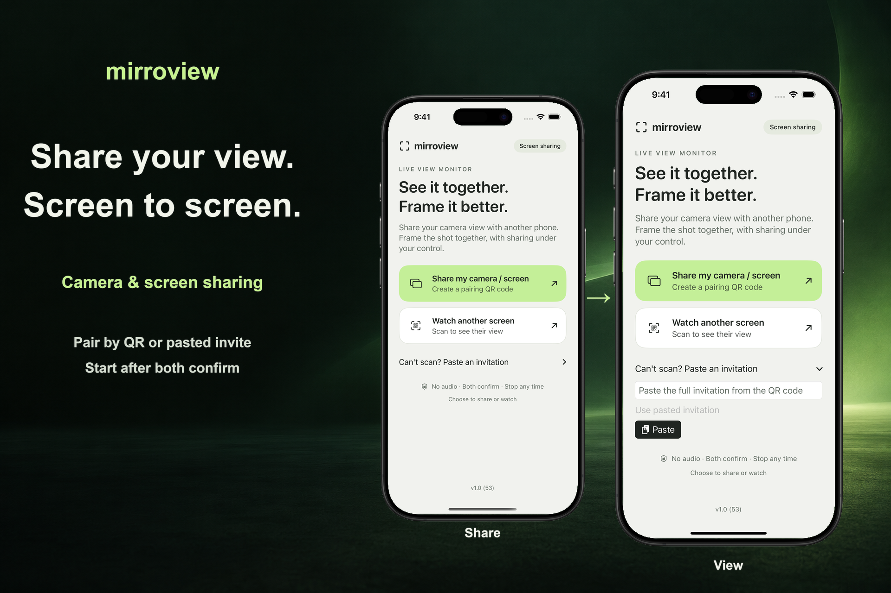

Pair in person
One person shares an invitation. The other scans the QR code or pastes the invitation, and both confirm the session.
A shared view, by choice
Share your iPhone or iPad screen with someone nearby. Both devices need iOS or iPadOS 17 or newer. Both people confirm the session, and the sender approves screen capture through the system interface.

One person shares an invitation. The other scans the QR code or pastes the invitation, and both confirm the session.
The home screen starts an entire-screen share. After iOS or iPadOS authorization, the sender can open another app, including Camera, to show its screen.
End the session from either device. For your first connection, use the same reachable local Wi-Fi network. Nearby connection availability depends on the devices, system support, and wireless conditions.
Screen sharing can reveal notifications and other private information. The app does not transmit audio. A viewer may still take a screenshot, record their screen, or photograph what they see. Some protected content may appear blank.